수능(국어영역) (2013-04-11 기출문제)
1. 위 토론에 대한 청중의 반응으로 가장 적절한 것은? [3점](1번 공통지문 문제)
- 찬성 측은 자료의 출처를 밝혀 자신의 주장의 정당성을 확보하고 있군.
- 찬성 측은 상대방 주장을 일부 수용함으로써 새로운 수정안을 제시하고 있군.
- 반대 측은 관련성이 낮은 화제를 끌어들여 논점을 흐리고 있군.
- 반대 측은 제도 시행의 어려움을 들어 상대방의 주장을 비판하고 있군.
- 찬성 측과 반대 측은 모두 상대편의 논리를 확대하여 해석하고 있군.
(정답률: 알수없음)

2. 다음은 두 학생이 나눈 대화이다. ‘윤서’가 다음 발표 시 보완해야 할 것은?
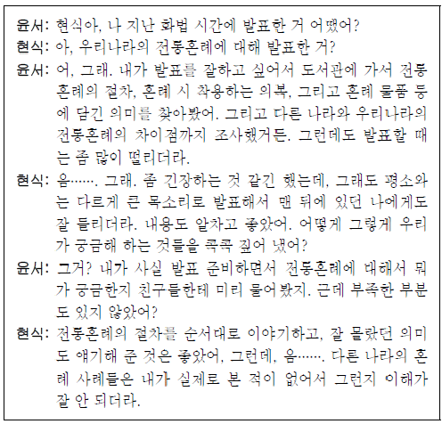
- 시청각 보조 자료를 활용하여 말한다.
- 듣는 이의 관심사를 고려하여 말한다.
- 상황에 따라 적절한 성량으로 말한다.
- 화제의 성격에 맞게 내용을 조직하여 말한다.
- 주제와 관련된 자료를 미리 조사하여 말한다.
(정답률: 알수없음)
3. [A]에서 의사소통 장애가 발생한 원인으로 적절한 것은?(4번 공통지문 문제)
- 학생들이 답변의 순서를 지키지 않고 말했기 때문이다.
- 학생들이 서로에게 과도한 경쟁심을 노출했기 때문이다.
- 면접관이 학생들의 면접 태도를 지적했기 때문이다.
- 면접관이 두 학생을 공정하게 대하지 않았기 때문이다.
- 면접관이 사용한 어휘를 학생들이 이해하지 못했기 때문이다.
(정답률: 알수없음)
4. <보기>를 읽고, 작문 과제에 맞는 글을 쓰기 위해 구상한 내용으로 가장 적절한 것은? [3점]
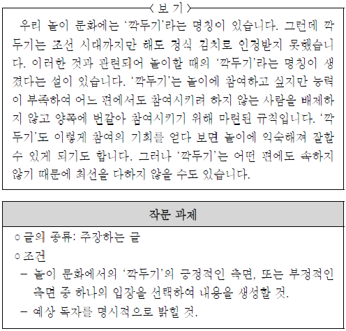
- ‘깍두기’는 소속된 자기편이 없다는 점에 주목하여, 동아리 소속 여부와 축제 시 활동의 적극성과의 상관관계에 관한 보고서를 써야겠어.
- 조선 시대에는 깍두기 김치가 정식으로 인정받지 못했다는 점에 주목하여, 능력 있는 친구들과만 가깝게 지내려는 학생들에게 충고하는 글을 써야겠어.
- ‘깍두기’도 놀이에 자주 참여하다 보면 잘할 수 있게 된다는 점에 주목하여, 진로 체험의 기회를 확대할 수 있는 프로그램을 제공해 달라고 건의하는 글을 써야겠어.
- ‘깍두기’의 활동에 의해 놀이의 결과가 결정되지 않는다는 점에 주목하여, 참여만 하면 봉사시간이 부여되는 단체 봉사활동 제도의 개선을 요구하는 글을 써야겠어.
- ‘깍두기’는 능력이 부족한 참여자를 위해 마련되었다는 점에 주목하여, 조별 활동 시 능력이 부족해서 발표 기회를 얻지 못한 친구들에게도 기회를 보장해 주자고 급우들에게 제안하는 글을 써야겠어.
(정답률: 0%)
5. 다음은 자료 수집 단계에서 접하게 된 안내문이다. 이를 바탕으로 ‘문화재 지킴이’를 모집하는 홍보 문구를 작성한다고 할 때, <보기>의 조건을 모두 충족한 것은?(7번 공통지문 문제)
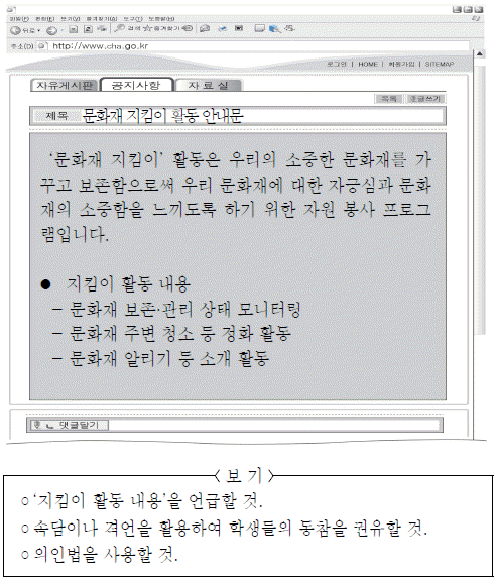
- 문화재의 훼손을 방치하는 것은 우리의 소중한 재산을 포기하는 일입니다. 모두 발 벗고 나서서 문화재를 살피는 지킴이가 됩시다.
- 사라져 가는 우리의 관심, 외로워하는 우리의 문화재. 백지장도 맞들면 낫다고 합니다. 다 함께 힘을 모아 우리의 문화재를 알립시다.
- 낙서로 얼룩진 문화재, 장난으로 부서진 문화재. 가랑비에 옷 젖는 줄 모르듯 한 문화재 훼손은 모든 문화재의 훼손으로 이어집니다.
- 천 리 길도 한 걸음부터. 우리 주변의 문화재부터 깨끗하게 가꾸고 소중하게 생각하는 마음이 문화재를 지키는 첫걸음입니다.
- 문화재의 흐느낌이 들리지 않나요? 늦었다고 생각할 때가 가장 빠른 때입니다. 문화재의 잃어버린 미소, 누구의 잘못일까요?
(정답률: 알수없음)
6. ㉠~㉤을 고쳐 쓰기 위한 방안으로 적절하지 않은 것은?(9번 공통지문 문제)
- ㉠: 의미가 중복되므로 ‘물의’를 삭제한다.
- ㉡: 문장 간 긴밀한 연계를 위하여 뒤의 문장과 순서를 바꾼다.
- ㉢: 문장 성분 간의 호응을 고려하여 ‘공연도 보고’로 고친다.
- ㉣: 글의 통일성을 고려하여 삭제한다.
- ㉤: 어법에 맞지 않으므로 ‘소개시켜’로 고친다.
(정답률: 0%)
7. 다음의 탐구 과정에 따라 ＜보기>의 ㉠∼㉤을 분류하고자 한다. A∼C에 해당하는 사례를 올바르게 짝지은 것은? (숨서대로 A : B : C)
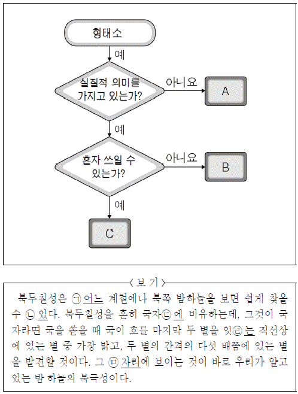
- ㉠, ㉤ : ㉢ : ㉡,㉣
- ㉡, ㉢ : ㉠, ㉤ : ㉣
- ㉢, ㉣ : ㉠, ㉡ : ㉤
- ㉢, ㉣ : ㉡ ㉠,: ㉤
- ㉣ : ㉢, : ㉤ : ㉠, ㉡
(정답률: 0%)
8. 다음은 문법 수업의 일부이다. 이를 바탕으로 ＜보기>의 밑줄 친 부분을 이해한 내용으로 적절하지 않은 것은? [3점]
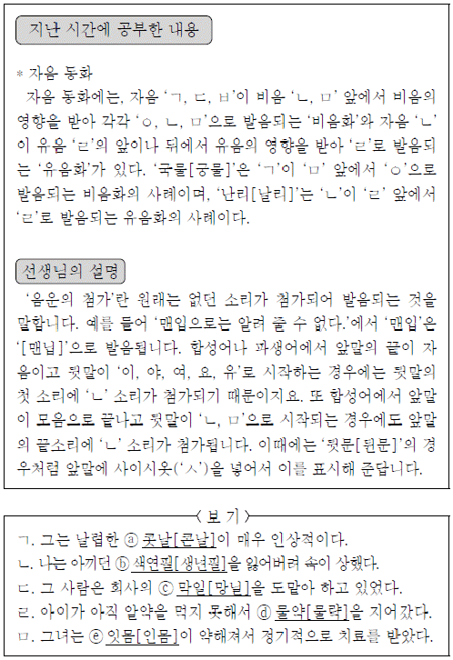
- ⓐ는 앞말이 모음으로 끝나고 뒷말이 ‘ㄴ’으로 시작되는 합성어이므로 앞말의 끝소리에 ‘ㄴ’ 소리가 첨가된 경우라고 할 수 있군.
- ⓑ에서 ‘ㄴ’ 소리가 첨가된 이유는 앞말의 끝이 자음이고 뒷말이 ‘여’로 시작하는 합성어이기 때문이군.
- ⓒ는 ‘ㄴ’ 소리가 첨가된 후, ‘ㅁ’의 영향으로 ‘ㄱ’이 비음화 된 경우라고 할 수 있군.
- ⓓ는 ‘ㄴ’ 소리가 첨가되어 ‘[물냑]’으로 바뀐 후, ‘ㄹ’의 영향으로 유음화가 일어난 경우라고 할 수 있군.
- ⓔ는 사이시옷을 넣어서 ‘ㄴ’ 소리가 첨가됨을 표시한 경우라고 할 수 있군.
(정답률: 알수없음)
9. <보기>는 ‘용언의 불규칙 활용’에 대한 설명이다. ㉠에 해당하는 것은?
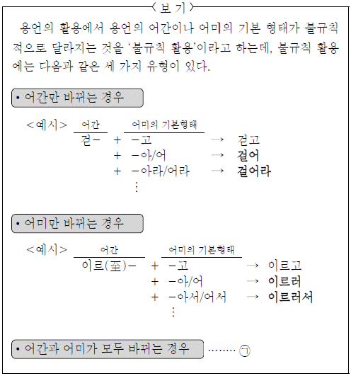
- 사람들을 빨리 불러 오너라.
- 하늘이 파래서 기분이 좋다.
- 그런 식으로 말을 지어 내지 마라.
- 지나가는 사람에게 길을 물어 봐라.
- 공부를 열심히 하여 좋은 결과를 얻자.
(정답률: 알수없음)
10. <보기 1>을 참고하여 <보기 2>를 이해한 내용으로 적절하지 않은 것은?
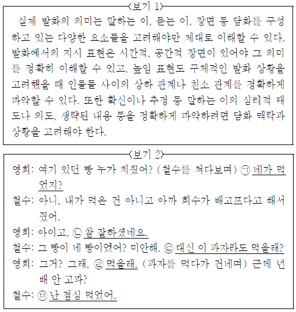
- ㉠ : 영희의 행위를 고려할 때 먹었지 라는 표현은 어떤 사실에 대해 의심하면서 이를 확인하려는 심리를 전달한다.
- ㉡: 발화 상황을 고려할 때 ‘참 잘하셨네요.’는 표현된 진술과 발화의 의도가 일치하지 않음을 알 수 있다.
- ㉢: 이어지는 영희의 반응을 고려할 때 ‘이’라는 지시 표현은 ‘과자’가 철수보다는 영희에게 가까운 위치에 있음을 나타낸다. 철수의 직전 발화 내용을 고려할 때 행위의 주체와 대상이 생 :
- ㉣ : 철수의 직전 발화 내용을 고려할 때 행위의 주체와 대상이 생략되었음을 알 수 있다.
- ㉤ : 과자를 건네는 영희의 행위와 마지막 물음에 담긴 의도를 고려할 때 제안을 거절하려는 철수의 심리가 담겨 있다.
(정답률: 알수없음)
11. <보기>는 이어진 문장과 안은 문장에 대해 정리한 것이다. 탐구의 결과로 적절하지 않은 것은?
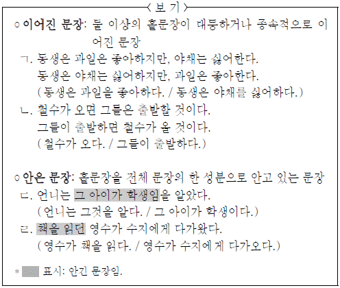
- ㄱ과 ㄴ으로 볼 때, 이어진 문장은 두 문장이 ‘대조’나 ‘조건’의 의미 관계로 연결되기도 하는군.
- ㄱ과 ㄴ으로 볼 때, 이어진 문장은 앞뒤 문장의 순서가 바뀌어도 동일한 의미를 나타내는군.
- ㄱ과 ㄹ로 볼 때, 이어진 문장과 안은 문장 모두 중복된 내용을 생략할 수 있군.
- ㄷ과 ㄹ로 볼 때, 안긴 문장은 안은 문장에서 명사처럼 쓰이거나 명사를 꾸미는 등 다양한 역할을 하는군.
- ㄷ과 ㄹ로 볼 때, 안긴 문장과 안은 문장의 주어는 같을 수도 있고 서로 다를 수도 있군.
(정답률: 알수없음)
12. 윗글과 관련지어 <보기>를 이해한 내용으로 적절하지 않은 것은? [3점](16번 공통지문 문제)
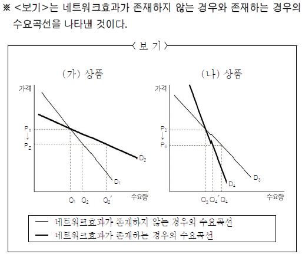
- (가) 상품의 가격이 P1에서 P2로 하락할 때 수요량이 Q1에서 Q2로 증가했다면, 유행효과가 존재하지 않는 것이겠군.
- (가) 상품의 가격이 P1에서 P2로 하락할 때 유행효과가 존재한다면, 그렇지 않은 경우에 비해 Q1에서 Q2′만큼 수요량이 더 증가하겠군.
- (나) 상품의 가격이 P3에서 P4로 하락할 때 속물효과가 존재한다면, 수요량은 Q3에서 Q4′로 변화하겠군.
- (나) 상품의 가격이 P3에서 P4로 하락할 때 수요량이 Q4가 아니라 Q4′로 된다면, 타인과 차별화되고 싶은 심리가 작용한 것이겠군.
- D1과 D2, D3과 D4를 각각 비교해 볼 때, 다른 사람들의 수요가 개인의 수요에 영향을 미침을 알 수 있군.
(정답률: 알수없음)
13. 다음은 <보기>의 (가), (나) 상품에 대한 판매 전략이다. 적절하지 않은 것은?(16번 공통지문 문제)
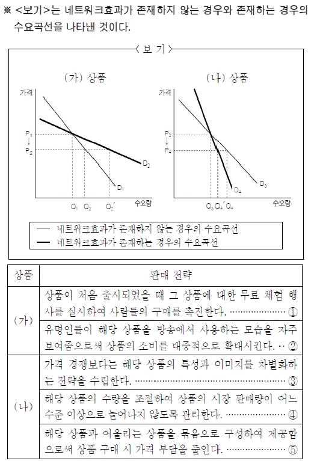
- ①
- ②
- ③
- ④
- ⑤
(정답률: 알수없음)
14. 밑줄 친 단어 중, ㉠과 가장 가까운 뜻으로 쓰인 것은?(16번 공통지문 문제)
- 내 가방에 깔려 납작해진 빵을 발견했다.
- 할머니 집 마루에는 돗자리가 깔려 있었다.
- 그 사람의 말에는 좋은 의도가 깔려 있었다.
- 동네에는 그에 대한 소문이 쫙 깔려 있었다.
- 여기저기에 깔려 있는 돈만 해도 상당한 액수였다.
(정답률: 알수없음)
15. <보기>는 신문 기사의 일부이다. ㉠의 관점에서 <보기>를 이해한 내용으로 적절하지 않은 것은? [3점](20번 공통지문 문제)
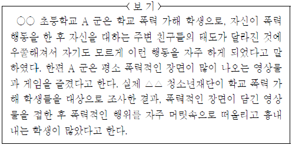
- 학교 폭력 가해 학생들이 폭력적인 영상물을 보고 그것을 흉내 내는 것은 공격행동을 재생한 것이라고 볼 수 있다.
- A 군의 공격행동이 자기도 모르게 나타난 것은 파지 과정에서 인지 능력이 제대로 발휘되지 못한 것으로 볼 수 있다.
- 공격행동이 나타나기 위해서는 주의집중 과정을 거치는데, A 군은 평소 공격행동이 학습되기 쉬운 상황에 있었다고 볼 수 있다.
- 공격행동이 다시 나타나기 위해서는 보상이 필요한데, 주변 친구들의 태도가 A 군의 공격행동에 동기를 부여했다고 볼 수 있다.
- 학교 폭력 가해 학생들이 폭력적인 영상물의 내용을 머릿속으로 떠올리는 것은 공격행동의 인지적 시연에 해당한다고 볼 수 있다.
(정답률: 0%)
16. 다음은 윗글을 읽은 학생이 작성한 독서록의 일부이다. ⓐ~ⓔ중 적절하지 않은 것은?(20번 공통지문 문제)
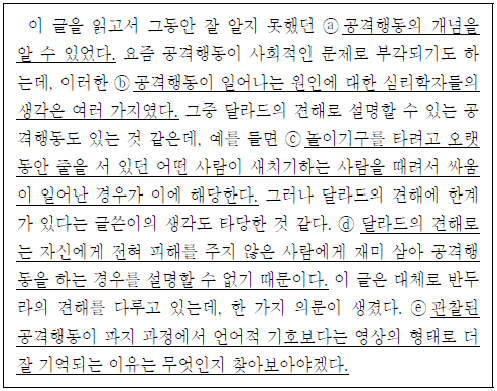
- ⓐ
- ⓑ
- ⓒ
- ⓓ
- ⓔ
(정답률: 알수없음)
17. ㉠의 구성 요소를 <보기>의 ⓐ~ⓒ와 대응시켜 바르게 짝지은 것은? (순서대로 ⓐ, ⓑ, ⓒ)(23번 공통지문 문제)
- 중심축, 2차적인 자기장, 회전판
- 회전판, 1차적인 자기장, 코일
- 중심축, 1차적인 자기장, 회전판
- 회전판, 2차적인 자기장, 코일
- 코일, 2차적인 자기장, 중심축
(정답률: 알수없음)
18. <보기>와 관련지어 윗글을 이해한 내용으로 적절하지 않은 것은? [3점](23번 공통지문 문제)
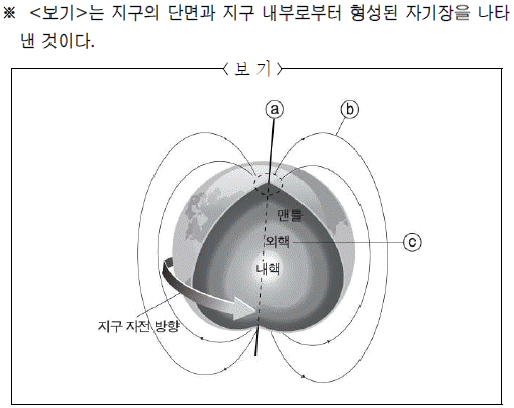
- ⓐ를 중심으로 한 지구의 자전은 ⓑ가 유지되는 것에 영향을 미치겠군.
- ⓐ를 중심으로 한 지구의 자전으로 인해 ⓒ를 구성하는 물질들이 순환하는 것이겠군.
- ⓑ가 형성되었더라도 지구 외부로부터의 자기장에 계속 영향을 받지 않는다면 ⓒ에서 발생한 전류는 유지될 수 없겠군.
- ⓒ를 구성하는 물질들의 전기 전도도가 높은 것은 ⓑ를 형성하는 조건이 되었겠군.
- ⓒ를 구성하는 물질들이 순환하고 있더라도 지구 외부로부터의 자기장이 없었다면 ⓒ에는 전류가 발생할 수 없었겠군.
(정답률: 알수없음)
19. <보기>는 흡음·간섭 혼합형 소음저감장치를 도식화한 것이다. 윗글을 바탕으로 ⓐ~ⓔ에 대해 설명한 내용으로 적절하지 않은 것은?(26번 공통지문 문제)
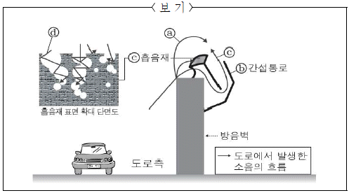
- ⓐ와 ⓒ가 중첩될 때 ⓐ와 ⓒ의 파동의 위상이 반대이면 소음이 감소한다.
- ⓑ는 소리의 간섭 현상을 활용하여, 중첩된 소음의 세기를 작아지게 하는 장치이다.
- ⓑ의 길이에 의해 ⓐ와 ⓒ는 시간차를 두고 특정 지점에서 중첩된다.
- ⓑ와 ⓔ를 동시에 설치하면 방음벽 뒤쪽으로 전달되는 소음의 감소 효과를 높일 수 있다.
- ⓔ 내부에서 ⓓ와 섬유소의 접촉면이 줄어들수록 소음 저감 효과는 더 커진다.
(정답률: 알수없음)
20. 윗글을 읽은 후 <보기>와 같은 실험 자료를 접했다고 할 때, 이에 대한 반응으로 적절하지 않은 것은?(26번 공통지문 문제)
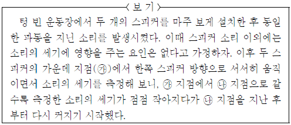
- ㉯ 지점에서는 상쇄 간섭이 일어났다고 할 수 있겠군.
- 두 스피커에서 나오는 소리는 다양한 지점에서 중첩되겠군.
- 다른 스피커 쪽으로 방향을 바꾸어 움직이면서 측정한다면 소리의 세기는 일정해지겠군.
- 한 개의 스피커를 끈다면 <보기>와 같은 소리 세기의 변화 양상은 나타나지 않았겠군.
- ㉮ 지점에서 측정되는 소리보다 ㉯ 지점에서 측정되는 소리의 진폭이 더 작다고 할 수 있겠군.
(정답률: 알수없음)
21. ㉠에 대해 ‘영수’가 해 줄 수 있는 조언으로 가장 적절한 것은?(29번 공통지문 문제)
- 중요한 내용을 요약해서 메모를 해 두면 글의 내용을 쉽게 떠올릴 수 있어.
- 핵심 단어를 파악하면서 읽으면 중심 내용이 무엇인지 잘 파악할 수 있어.
- 단어의 사전적 의미를 찾으며 읽으면 글의 내용을 정확히 이해할 수 있어.
- 예측한 내용이 맞는지 읽으면서 확인하면 궁금했던 점들을 해결할 수 있어.
- 자신의 경험을 떠올리며 배경 지식을 활성화해야 글을 쉽게 이해할 수 있어.
(정답률: 알수없음)
22. <보기>는 안락국의 이동 경로를 나타낸 것이다. 이에 대한 반응으로 적절하지 않은 것은? [3점](31번 공통지문 문제)
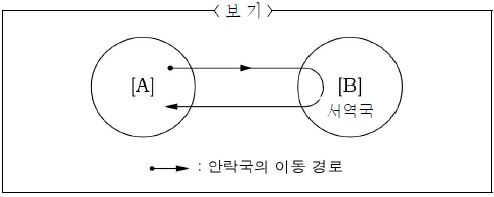
- 안락국은 사라수 대왕을 만나기 위해 [A]에서 [B]로 이동하는군.
- 부동은 [A]를 떠나는 안락국을 잡으려고 했군.
- 장자는 [A]를 떠난 안락국의 행방을 원앙 부인을 통해 알아내려고 하는군.
- 사라수 대왕은 안락국과 함께 [B]에서 [A]로 이동하는군.
- 원앙 부인은 안락국이 [B]에서 [A]로 가져온 꽃에 의해 다시 살아나게 되는군.
(정답률: 알수없음)
23. ㉠의 기능에 대한 설명으로 적절하지 않은 것은?(31번 공통지문 문제)
- 안락국의 슬픈 심리를 불러일으킨다.
- 안락국의 다음 행동을 유발하고 있다.
- 안락국에게 죽은 원앙 부인의 위치를 알려준다.
- 안락국에게 원앙 부인의 말을 대신하여 전달하고 있다.
- 안락국에게 대왕이 한 예견의 일부가 실현되었음을 알려준다.
(정답률: 알수없음)
24. <보기>는 ⓐ에 대해 ‘사라수 대왕’이 보일 반응을 상상한 것이다. ( )에 들어갈 한자성어로 적절한 것은?(31번 공통지문 문제)
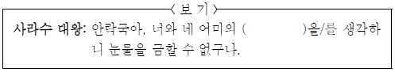
- 간난신고(艱難辛苦)
- 고진감래(苦盡甘來)
- 괄목상대(刮目相對)
- 방약무인(傍若無人)
- 좌고우면(左顧右眄) 서역국
(정답률: 알수없음)
25. 윗글에 대한 설명으로 적절하지 않은 것은?(35번 공통지문 문제)
- [A]에는 [B]와 달리 화자가 본받고자 하는 자연의 모습이 나타나 있다.와
- [A] [B]는 모두 주변 경치를 묘사한 후, 그 속에 머물며 즐거워하는 화자의 심정을 드러내고 있다.
- [C]에는 [D]와 달리 화자의 행위가 일어나는 공간이 드러나 있다.
- [C]와 [D]는 모두 화자의 소박한 삶의 모습을 그린 후, 그러한 삶에 대한 화자의 감정을 드러내고 있다.
- [E]에는 화자가 처한 공간을 이상향에 견주어 그곳에서 살아가는 화자 자신의 자긍심이 드러나 있다.
(정답률: 알수없음)
26. <보기>는 서사의 흐름에 따른 ‘동근’의 상황 변화를 정리한 것이다. 이에 대해 이해한 내용으로 적절하지 않은 것은? [3점](37번 공통지문 문제)
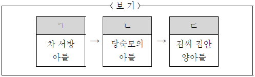
- ㄱ은 ‘동근’을 김씨 집안사람으로 받아들이지 않으려는 이유가 된다.
- ㄴ에서 ‘동근’은 인물들에게 ‘똥멱이 아들’과 ‘어구어구 내 새끼’로 각각 다르게 인식된다.
- ㄷ에는 ‘동근’을 가치 있는 존재로 여기게 된 큰당숙의 태도가 드러난다.
- ㄴ에서 ㄷ으로 변화된 것은 ‘동근’에 대한 당숙모의 변함없는 태도와 관련이 있다.
- ‘빨갱이의 자식’이라는 말에는 ㄴ에서 ㄷ으로의 변화를 인정하지 않으려는 동식의 태도가 드러난다.
(정답률: 알수없음)
27. ＜보기>를 참고하여 윗글을 감상한 내용으로 적절하지 않은 것은?(37번 공통지문 문제)
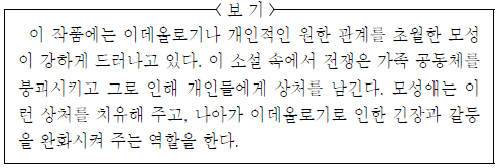
- 갓난애를 품에 안고 도망치는 당숙모의 행동은 개인적인 원한 관계를 넘어선 모성이 드러난 것으로 볼 수 있겠군.
- 가족을 잃고 혼자 남은 당숙모와 동근의 모습은 전쟁으로 인해 파괴된 가족 공동체의 실상을 보여준다고 할 수 있겠군.
- 낫을 들고 양식을 얻으러 다니던 당숙모의 모습은 이데올로기로 인한 긴장과 갈등의 심리를 드러낸 것이라고 할 수 있겠군.
- 동근을 호적에 올려 달라는 당숙모의 요구에는 동근이가 집안의 일원으로 편입되기를 바라는 모성이 내재되어 있다고 할 수 있겠군.
- 어린애가 생기면서부터 귀신같이 산발한 채 다니던 당숙모의 행동이 없어진 것은 개인의 상처가 치유되고 있음을 보여주는 것이겠군.
(정답률: 알수없음)
28. <보기>를 참고하여 윗글을 감상한 내용으로 적절하지 않은 것은?(40번 공통지문 문제)
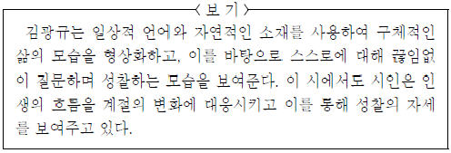
- ‘곡식이 뜨겁게 익고’와 ‘무엇인가 거두어들일 때’를 흐름이나 변화와 관련지어 볼 때, ‘여름내 흘린 땀’은 결실을 얻기 위한 노력으로 볼 수 있군.
- ‘검푸른 숲이 짙은 숨결을 뿜어내’는 것은 끊임없이 삶을 탐구하는 자세와 삶의 의지를 형상화한 것으로 볼 수 있군.
- ‘누르스름한 이파리’, ‘저녁의 귀뚜라미 울음소리’ 등과 같은 자연적 소재로 계절적 배경을 드러내고 있군.
- ‘광복절’, ‘며칠 안 남은 여름방학’과 같은 일상적 언어로 시적 구체성을 획득하고 있군.
- ‘늦여름이라고 고집하지 말자’는 스스로에 대한 성찰을 통해 바람직한 삶의 자세를 노래한 것으로 볼 수 있군.
(정답률: 0%)
29. ㉠~㉣에 대한 설명으로 적절하지 않은 것은? [3점](40번 공통지문 문제)
- ㉠에는 시간의 경과에 대한 아쉬움이 담겨 있다.
- ㉡에는 자연물에 의해 상기된 시간에 대한 인식이 나타나 있다.
- ㉢에는 지난 시간에 대한 체념이 내포되어 있다.
- ㉣에는 현재 시간의 의미에 대한 깨달음이 담겨 있다.
- ㉢과 ㉣에는 동일한 시간에 대한 태도의 차이가 나타나 있다.
(정답률: 알수없음)
30. <보기>를 참고하여 윗글에 나타난 장면 전환을 이해한 것으로 적절하지 않은 것은? [3점](43번 공통지문 문제)
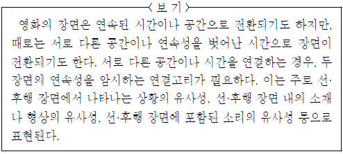
- S#54에서 터널로 들어가는 것과 S#55의 동굴 안은 어둠이라는 상황의 유사성을 이용한 장면 전환이 일어나는 것이군.
- S#55에서 굴속에서의 현의 목소리와 일본인 교수의 목소리는 메아리라는 소리의 유사성을 활용하여 S#56으로의 전환을 유도하고 있군.
- S#56에서 S#57로의 장면 전환은 교수의 강의에 대해 현이 반문하는 모습을 보여줌으로써 ‘강의에 대한 반응’이라는 상황의 유사성으로 연결시키고 있군.
- S#57에서 S#58로의 장면 전환은 괴로워하는 현의 신음 소리와 교수의 강의 소리라는 소리의 유사성을 활용하여 이루어지고 있군.
- S#58에서 S#59로의 장면 전환은 교수의 말의 일부를 다시 사용하여 ‘달게’라고 반문하는 ‘현’의 말의 소리의 유사성을 활용하여 이루어지고 있군.
(정답률: 알수없음)
31. ㉠~㉤의 기능에 대한 설명으로 적절하지 않은 것은?(43번 공통지문 문제)
- ㉠은 ‘현’에 대한 ‘고영감’의 기대를 보여주고 있다.
- ㉡은 이별의 시간이 되었음을 청각적으로 일깨워주고 있다.
- ㉢은 ‘현’이 자신이 있는 장소가 어디인지를 확인하게 하고 있다.
- ㉣은 ‘현’의 부상이 심각한 상태임을 시각적으로 보여주고 있다.
- ㉤은 자신을 구해줄 사람에 대한 현의 기대를 상징적으로 드러내고 ‘ ’ 있다.
(정답률: 알수없음)